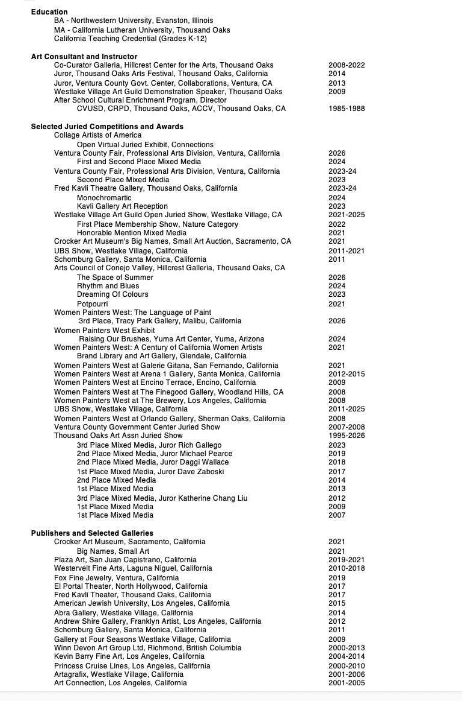

Color and texture are always at the heart of my work. Art is my way of communicating, and through familiar imagery I "speak" a common language with the viewer. I am a painter, a mixed media artist, and a printmaker.
Symbols that represent the common threads and relationships of life are prevalent in my paintings. My paintings are about the connection with life and nature. My garden with its bright colors and seasonal changes provides me with inspiration. My favorite color red is abundant both in my garden and my paintings. Nature's references are incorporated with leaves, bark, pods, and relevant imagery; personal items such as words, photographs, and old letters may be included. Paper fragments and layers of collage may be buried under layers of pigment.
I love experimenting with new techniques and media, often surprising myself in the creative process. Working in this way gives me the freedom to play with concepts and imagery while reinventing my art. The process of making art is as important to me as the finished product. The passion of creating is what I live for. If I hadn't started doing what comes from my heart, I might not be doing anything. I don't always know where I am going, but I seem to find my way.
My art is in numerous corporate and private collections world wide. Some corporate commissions include the Marriott Marquis Hotel at Times Square in New York City, the Princess Cruise Lines, Florida, and the Crown Plaza Hotel in White Plains, New York.
Resume Highlights

Saatchi Gallery online
CSQ Magazine